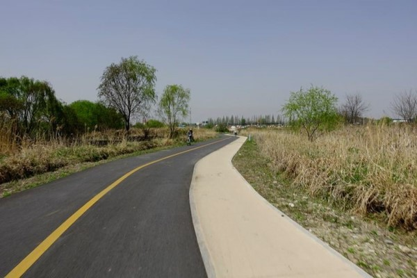

자전거
내가 거주하는 일산에서 서울의 한강까지 자전거가 지나다닐 수 있도록 자전거 도로가 길게 펼쳐져있다. 자전거도로 옆으로 갈대밭이 있어서 그냥 자전거만 타고 산책을 해도 좋지만 한강에 도착하면 공원이 잘 조성되어있어서 배드민턴이나 축구,야구 등의 스포츠 또는 피크닉을 즐길 수도 있다.
자전거 종류에는 여러가지가 있는데 그 중 내가 선호하는 것은 MTB이다. MTB는 mountain bike의 약자로 도시형 자전거로 나온 로드나 하이브리드 자전거보다는 바퀴가 두껍다. 그래서 더 안정감이 느껴지기도 하고 앞바퀴에 서스펜션이 있어서 다른 자전거들보다 승차감(?)이 좋아 산악자전거(MTB)를 선호한다.
| 자전거 종류 | 비고 |
|---|---|
| 로드바이크 | 스피드내기 위해 가볍고 바퀴가 얇으며 핸들이 아래쪽으로 꺾여있음 |
| MTB(산악자전거) | 거친 노면을 주행할 수 있고 승차감이 좋으나 다소 무거움 |
| 하이브리드 | 로드와MTB를 믹스한 자전거로 로드바이크와 MTB의 중간정도의 특징 |
| 미니벨로 | 20인치이하의 작은바퀴를 가지고 있어 보관-휴대가 편하지만 장거리이동에는 부적절함 |
